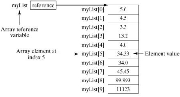

Assignments
Assignment 1
Assignment 2
1: Paradigms & Languages
Introduction
Software Paradigms
Programming Language Evolution
Programming Language Convergence
Lab-01 Eclipse & Java
RefCardz: Agile Adoption
2: The Java Programming Language
Introduction
Basics + Arrays
Classes
Control Statements
Object Oriented Concepts
Lab-02 CLI & Classes
3: Inheritance & Collections
Implementation Inheritance
Interface Inheritance
Introducing Collections
Using Collections
Lab-03 Objects & Serialization
4: Serialization & Test Driven Development I
Streams
TDD Introduction
First Tests
Lab-04 Testing
5: Test Driven Development II
Annotations
Pragmatic Testing Stack Example
Pragmatic Testing Video Player Example
Pacemaker Tests
Lab-05 Refactoring
RefCardz: JUnit and EasyMock
6: Exceptions & Maven
Exceptions
DevOps
Maven Introduction
Maven Example
Lab-06 Maven
Maven - MultiModule
Maven Cheat Sheet
7. TDDIII and Java Evolution
Writing Tests
Right BICEP
C.O.R.R.E.C.T
Java 7 to 10
Lab-07 Java Versions
8: SRP and Assignment 1 Solution
Pacemaker Solution
SOLID Principles
Single Responsibility Principle
Lab-07a Pacemaker Models
Lab-07b Pacemaker API
Lab-08 Skeleton
Agile Software Development
All slides's in Module
Assignment 1
Assignment 2
Introduction
Software Paradigms
Programming Language Evolution
Programming Language Convergence
Introduction
Basics + Arrays

Classes
Control Statements
Object Oriented Concepts
Implementation Inheritance
Interface Inheritance
Introducing Collections
Using Collections
Streams
TDD Introduction
First Tests
Annotations
Pragmatic Testing Stack Example
Pragmatic Testing Video Player Example
Pacemaker Tests
Exceptions
DevOps
Maven Introduction
Maven Example
Writing Tests
Right BICEP
C.O.R.R.E.C.T
Java 7 to 10
Pacemaker Solution
SOLID Principles
Single Responsibility Principle